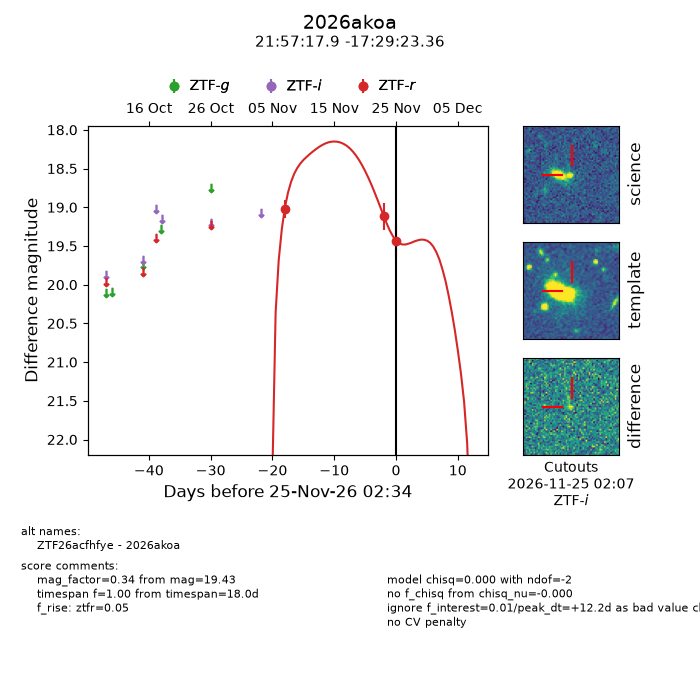
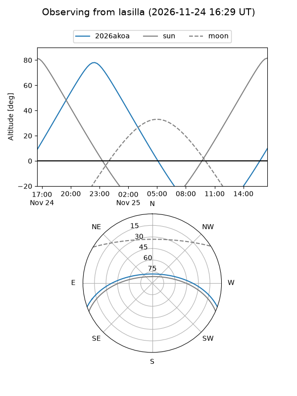
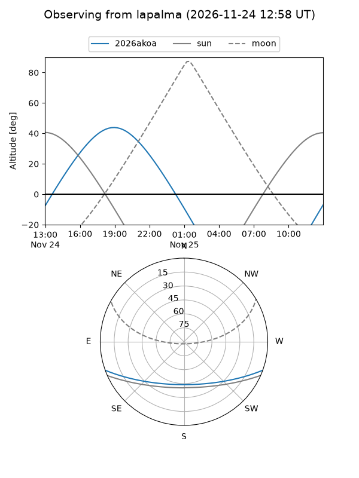
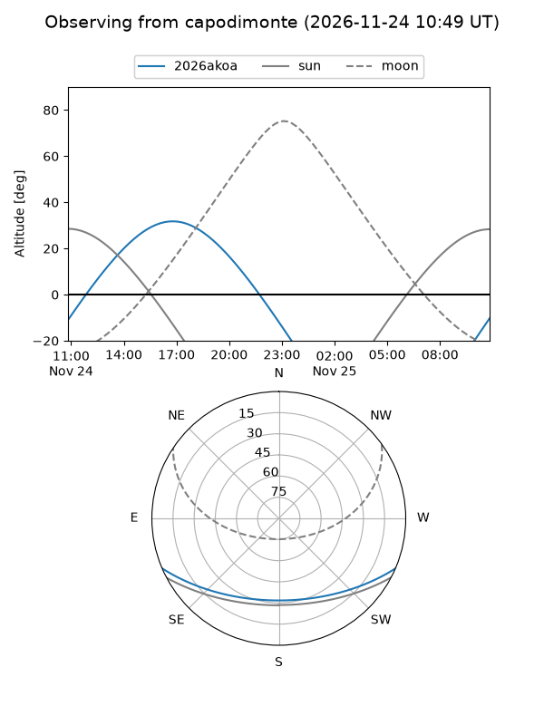
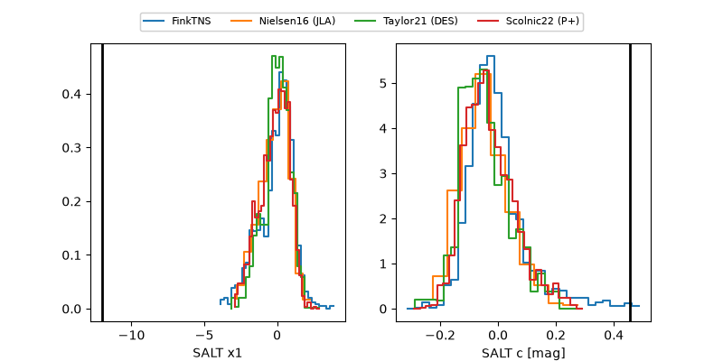

2026akoa
Target 2026akoa at 2026-11-25 02:36
Aliases and brokers:
FINK-ZTF: ztf.fink-portal.org/ZTF26acfhfye
Lasair-ZTF: lasair-ztf.lsst.ac.uk/objects/ZTF26acfhfye
ALeRCE-ZTF: alerce.online/object/ZTF26acfhfye
YSE-PZ: ziggy.ucolick.org/yse/transient_detail/2026akoa
TNS name: wis-tns.org/object/2026akoa
Direct TNS query: direct search
alt names
ZTF26acfhfye (ztf,fink_ztf)
2026akoa (tns,yse)
Coordinates:
equatorial (ra, dec) = 329.3248,-17.48982
equatorial (HMS+DMS) = 21:57:17.95,-17:29:23.36
galactic (l, b) = (37.0946,-48.80007)
Flags:
peak dt: +12.2
Photometry:
last ztfr=19.43
3 ztfr detections
Lightcurve

Visibility



Additional plots
